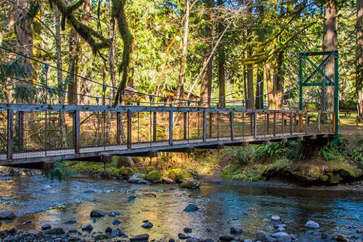

This blog explores the quiet beauty of life in a secluded countryside neighborhood—a place where nature, stillness, and simplicity shape everyday living.
Enjoy the outdoors in hidden places.

Please be careful when exploring and respect the wildlife. Follow the instructions and the paths.
Let's ready to eat!